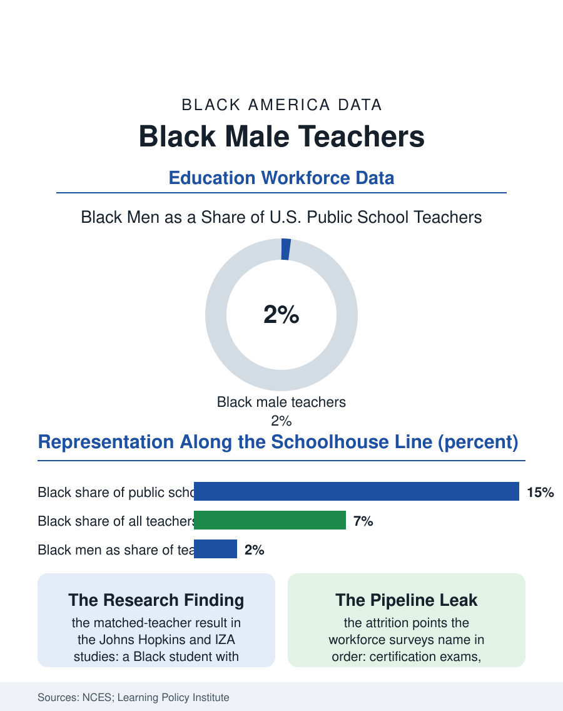

Black Education
The Two Percent: Black Men in America's Classrooms
About two of every hundred public school teachers are Black men, in classrooms where fifteen of every hundred students are Black. The smallest faculty file in the atlas.

Of the roughly three and a half million teachers in American public schools, about two in every hundred are Black men. The figure has barely moved across decades of surveys, through recruitment drives, signing bonuses, and national campaigns, and it stands in the record against the student body those teachers serve: about fifteen in every hundred public school students are Black, and roughly half of them are boys who may pass twelve years of schooling without once being taught by a man who looks like them. This article reads the smallest faculty file in the atlas.
What the Workforce Surveys Count
The National Center for Education Statistics counts the teaching force through its National Teacher and Principal Survey, and the pattern it returns is consistent at every level of the system. Black teachers overall are about seven percent of the workforce, already less than half the Black share of enrollment. Within that seven percent, women are the large majority, a distribution that mirrors teaching generally but is sharper here: the profession draws Black women at several times the rate it draws Black men. The shortage is not evenly spread. Black male teachers concentrate in urban districts, in secondary grades, and in a narrow band of subjects, with physical education, social studies, and special education drawing more than mathematics and science. Elementary classrooms, where the matched-teacher research finds the largest effects, are where Black men are scarcest of all, in many states amounting to a few hundred individuals across thousands of schools.
Why the Number Stays Small
The pipeline leaks at every joint the surveys can measure. Entry begins with college completion itself: Black men earn bachelor's degrees at rates well below the national average, shrinking the eligible pool before any education program sees an applicant. Certification examinations filter further, with first-time pass rates on state licensure tests documented lower for Black candidates, a gap researchers attribute to preparation access and test design rather than classroom ability, since the same candidates succeed in supervised teaching. Pay then competes against every other field open to a Black male graduate, and teaching's starting salaries lose that contest in most labor markets. Those who enter are placed disproportionately in high-poverty schools with the heaviest discipline loads and the least administrative support, and the retention data follows the placement: Black male teachers leave the profession at elevated rates in their first five years, citing workload, pay, and the unofficial second job so many describe, serving as the building's default disciplinarian and mentor to every Black boy in it, labor the schedule never counts.
The Effect the Research Keeps Finding
The reason the two percent matters beyond representation is a finding replicated often enough to be treated as settled direction. Studies following North Carolina and Tennessee cohorts found that a Black student assigned to one Black teacher in the early grades was more likely to finish high school and more likely to enroll in college, with the largest gains among Black boys from low-income families, the very students the system serves worst. The mechanisms proposed are the ordinary ones of the classroom: expectations communicated and believed, a standing refutation of the idea that school is not for people like him, and discipline administered inside a relationship rather than across a divide. The policy responses in the record are correspondingly practical: grow-your-own programs that recruit paraprofessionals and high school students from the district itself, loan forgiveness tied to service, licensure pathways that weigh supervised classroom performance alongside examinations, and retention work aimed at the second job, spreading mentorship deliberately instead of letting it fall by default on the only Black man in the building. None of it has yet moved the national figure. The file closes where it opens: two in a hundred, holding a door the data says matters, in a system that keeps measuring the door and underbuilding the hinge.
The geography of the shortage deserves its own line in the file. Black male teachers are most present where Black students are most numerous, in the large urban districts of the South and Midwest, and nearly absent across whole rural counties and suburban systems where a Black boy may nonetheless sit in every classroom. State workforce reports that publish the count district by district show the pattern as a scatter of exceptions: a single school with three Black male teachers becomes a destination families request by name, proof that the scarcity is not indifference on either side of the desk. Where districts have treated the count as a number to manage rather than a hope to voice, with dedicated recruiters, cohort hiring, and principals accountable for retention, the local figures have moved within a few hiring cycles, which is the file's one encouraging arithmetic: the national two percent is an average of places that tried and places that never counted.
More in Black Education
Black Educational Attainment: High School Parity, the College Gap
About 89 percent of Black adults hold a high school diploma and one in four holds a bachelor's degree or higher — the attainment ladder, the college completion gap, and the generational trend.
Historically Black Colleges and Universities: Enrollment and Degrees
More than 100 HBCUs enroll roughly 290,000 students and award about one in six Black bachelor's degrees — an outsized share from a small sector. The federal education data.
Black College Enrollment: 2.4 Million Students
About 2.4 million Black students are enrolled in American colleges — nearly two-thirds of them women. The NCES enrollment data by sector, level, and trend.
Source: National Center for Education Statistics, National Teacher and Principal Survey; Learning Policy Institute analyses of the teacher workforce.